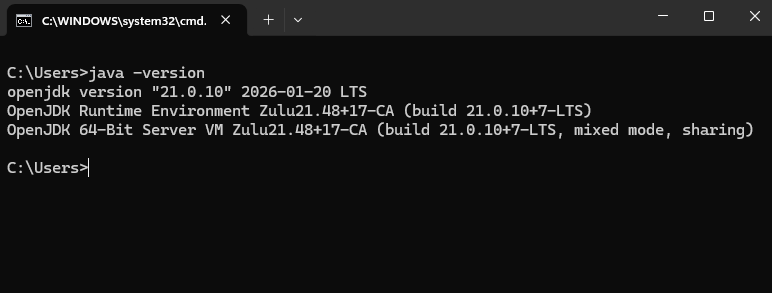
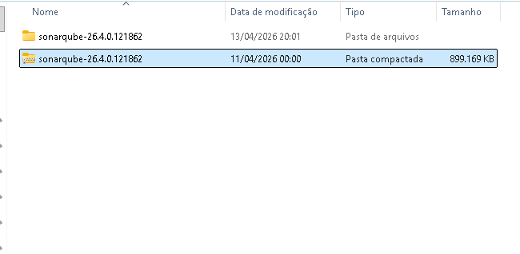
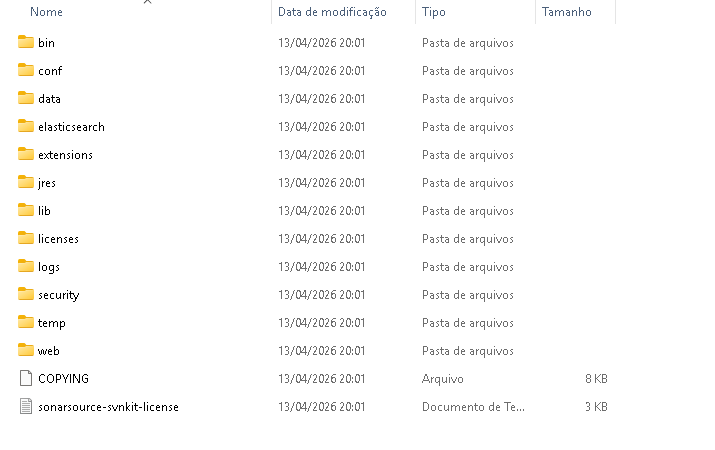
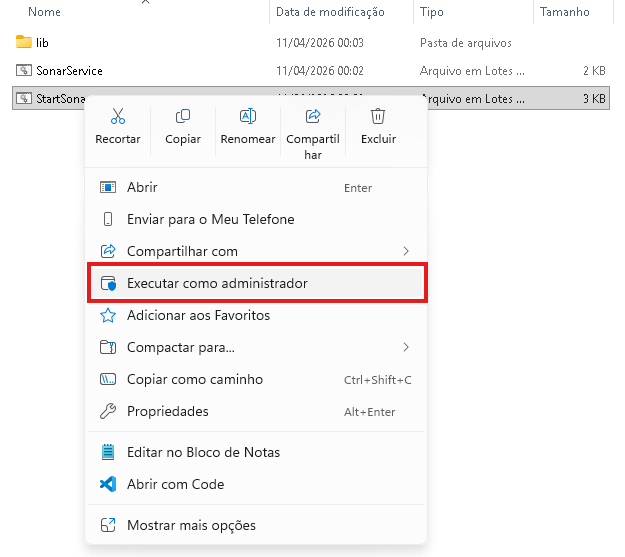
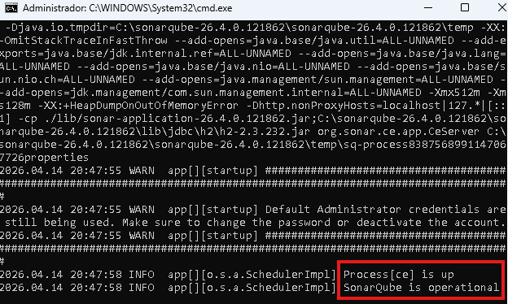
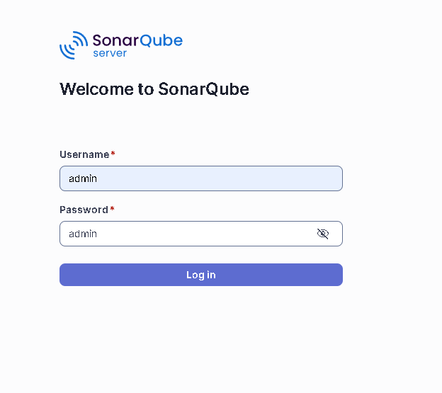
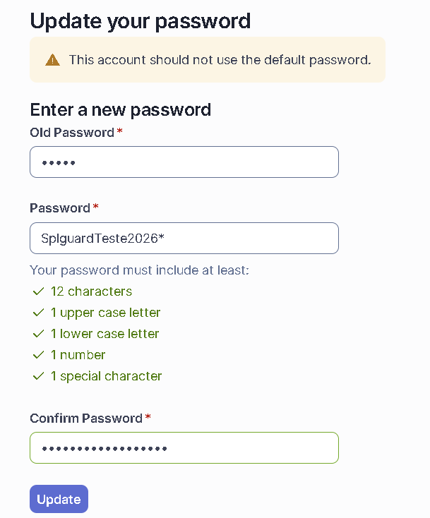
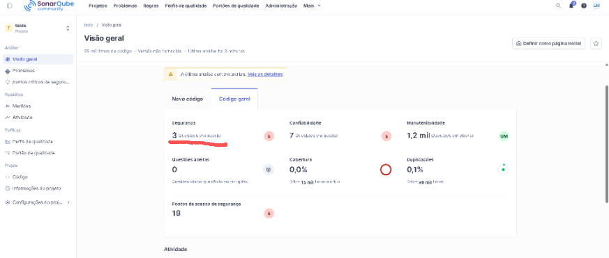
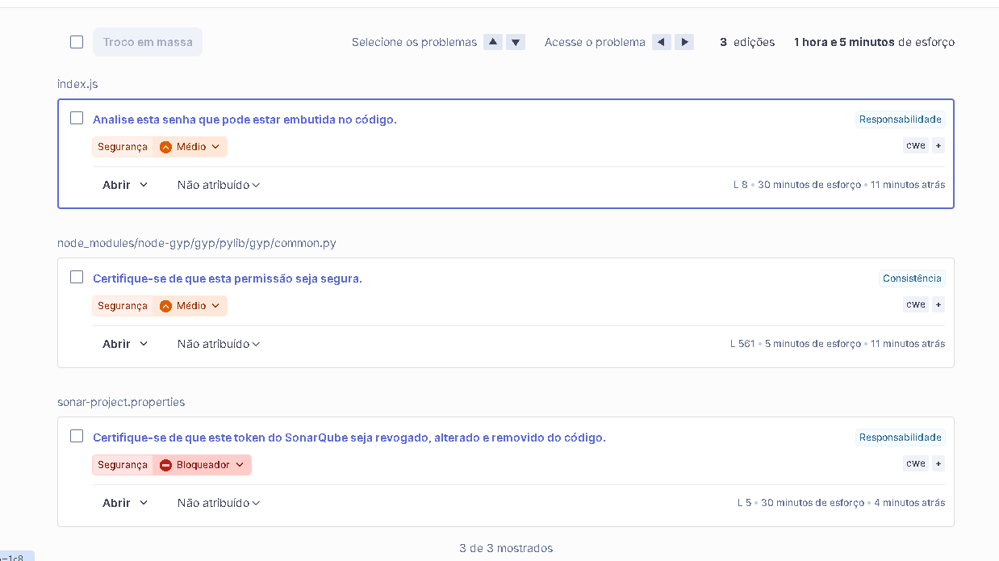
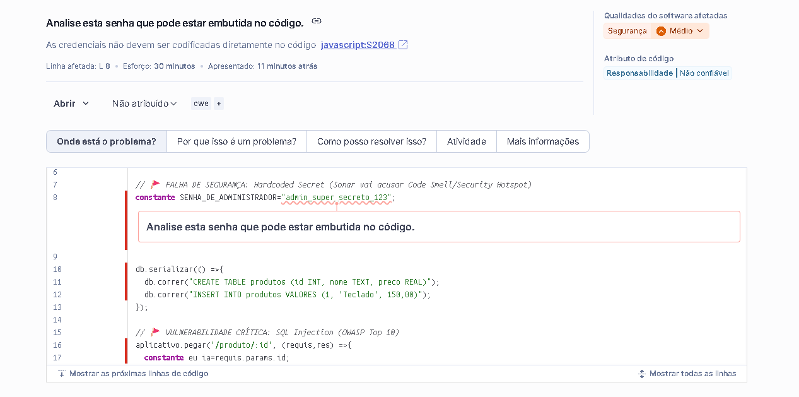

🔬 SPL GUARD — TESTES
Validação Automatizada
🔍 SAST — ANÁLISE DE CÓDIGO COM SONARQUBE
🔹 Objetivo
Realizar análise estática de segurança no código-fonte, identificando vulnerabilidades antes da execução da aplicação.
📘 Tutorial Completo: Instalação
🔹 1. Instalar o Java (JDK 17)
O SonarQube NÃO funciona sem Java.
Passos:
- Baixe o JDK 17 (recomendo): Eclipse Temurin
- Instale normalmente (Next → Next → Finish)
✔️ Verificar instalação
Abra o Prompt de Comando (CMD):
java -version

👉 Deve aparecer algo como:
openjdk version "17.x.x"
❌ Se der erro → Java não foi configurado no PATH.
🔹 2. Baixar o SonarQube
Acesse: Link oficial e baixe a versão Community (gratuita).
Extraia o ZIP para uma pasta, por exemplo:
C:\sonarqube

🔹 3. Estrutura do projeto
Dentro da pasta você verá algo como:
bin/
conf/
data/
logs/
extensions/

🔹 4. Iniciar o SonarQube
Vá até:
bin\windows-x86-64
Execute:
StartSonar.bat

👉 Vai abrir um terminal com logs.
🔹 5. Aguardar inicialização
Você verá mensagens como:
SonarQube is up

🔹 6. Acessar no navegador
Abra: http://localhost:9000

Login padrão:
- user: admin
- password: admin
🔹 7. Trocar senha (obrigatório)
O sistema vai pedir para trocar a senha na primeira vez.

⚠️ Problemas comuns no Windows
❌ Porta 9000 ocupada
Erro:
Port already in use
✔️ Solução:
netstat -ano | findstr 9000

Depois finalize o processo:
taskkill /PID XXXX /F
❌ Java não reconhecido
Erro:
java is not recognized
✔️ Solução:
- Configurar variável de ambiente JAVA_HOME
- Adicionar ao PATH

🧩 Tutorial Completo: Uso do SonarQube (SAST)
🔹 1. Criando o Projeto (Painel)
Você está na tela:
"How do you want to create your project?"
👉
Aqui você NÃO vai usar GitHub nem nada
avançado.
✔ Clique em: Create a local project
🔹 2. Configuração do Projeto
✔ Preencha:
-
Project key: nome único (ex:
meu-projeto) -
Display name: nome do projeto (ex:
Sistema Vendas) -
Main branch: manter como
main
✔ Clique em: Next
🔹 3. Configuração de Código Novo
Nesta etapa, o sistema solicita a definição de como será tratado o código novo dentro do projeto.
✔ Escolha: Follows the instance’s default
👉 Não é necessário alterar essa configuração.
✔ Clique em: Create project
🔹 4. Gerar Token (Acesso)
Agora ele vai pedir autenticação.
✔ Escolha: Generate a token
-
Nome: pode ser qualquer (ex:
sonar-token)
👉 Copie esse token
⚠️ MUITO IMPORTANTE: Você vai usá-lo na configuração.
🔹 5. Escolher como analisar
Ele vai mostrar opções como: With Maven, With Gradle, With CLI.
✔ Escolha: CLI (mais simples)
🔹 6. Preparar o projeto no seu computador
👉 Dentro da pasta do seu projeto:
✔ Crie um arquivo chamado:
sonar-project.properties
✔ Dentro dele coloque:
sonar.projectKey=meu-projeto
sonar.sources=.
sonar.host.url=http://localhost:9000
sonar.login=SEU_TOKEN_AQUI
👉 Substitua pelo token que você copiou.
🔹 7. Instalar o Scanner
No terminal (CMD ou VSCode):
npm install -g sonar-scanner
🔹 8. Rodar a Análise (Parte Mais Importante)
Dentro da pasta do projeto, execute no terminal:
sonar-scanner
🔹 9. Aguardar Processamento
👉 Ele vai:
- Ler seu código
- Analisar vulnerabilidades
- Enviar pro SonarQube
🔹 10. Ver Resultado
Volte no navegador: http://localhost:9000
Clique no seu projeto.
🔍 O QUE VOCÊ VAI VER
- 🔴 Vulnerabilidades (segurança)
- 🟡 Bugs
- 🔵 Code smells
- 📊 Nota do projeto
🔥 COMO INTERPRETAR (IMPORTANTE)
👉 Clique em qualquer erro. Ele mostra:
- Linha do código
- Problema
- Sugestão de correção
🧠 EXEMPLO REAL
👉 Ele pode dizer:
- “Possível SQL Injection”
- “Uso inseguro de variável”
👉 Isso já conecta com seu OWASP.
🔒 REGRA DO SPL GUARD
👉 Código só avança se:
- ❌ Sem vulnerabilidade crítica
- ⚠️ Média → corrigir
- ✔️ Baixo → opcional
👁️ Visão Prática: O SonarQube em Ação
1. Visão Geral do Projeto
O painel exibe o status de qualidade do código. Observe a seção de "Segurança" alertando sobre problemas encontrados.

2. Lista de Problemas (Vulnerabilidades)
Ao clicar nos alertas de segurança, o SonarQube lista todos os problemas identificados, o nível de severidade e o respectivo arquivo afetado.

3. Detalhamento no Código Fonte
Clicando no problema, a ferramenta exibe a exata linha de código vulnerável, explica a falha (ex: credencial embutida/hardcoded) e indica a resolução.

DAST — OWASP ZAP
Selecione e configure a ferramenta DAST para testes dinâmicos de segurança na aplicação em execução.